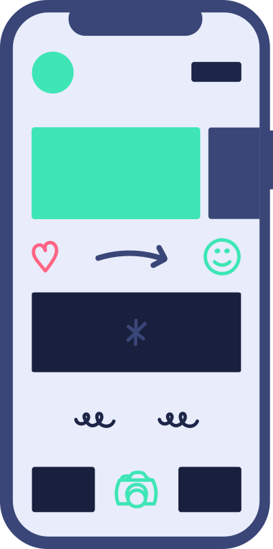
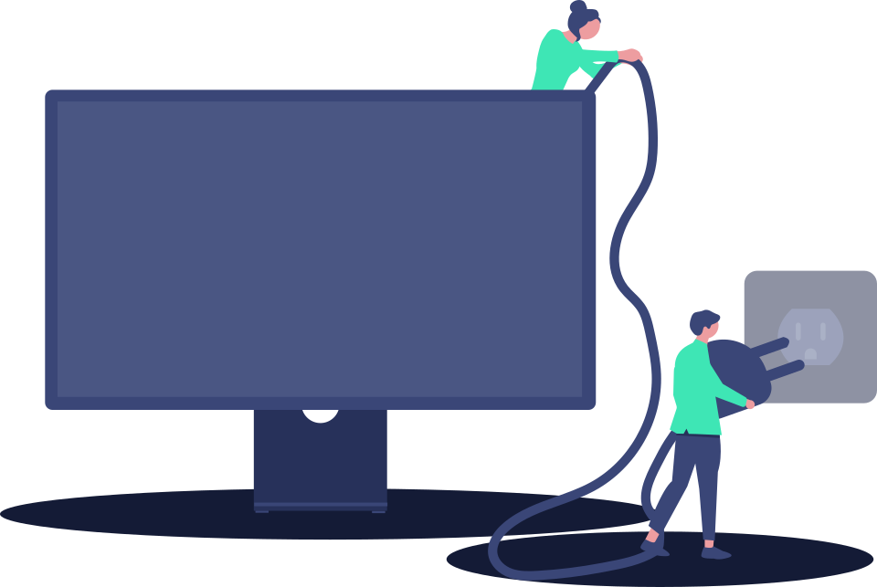
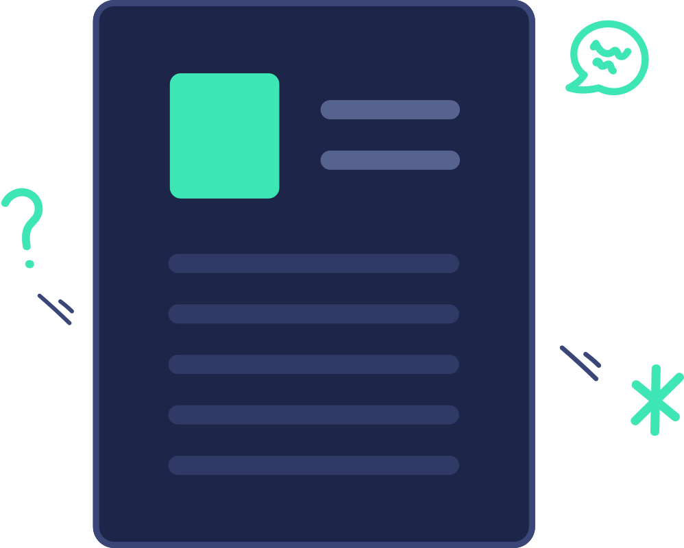
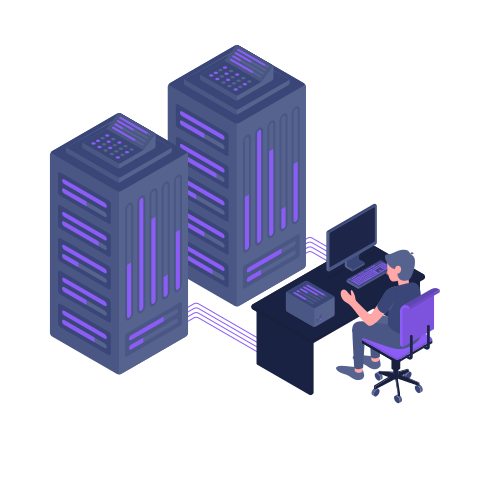
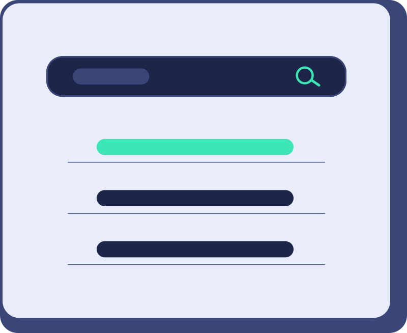

01Технології опрацювання мультимедійних даних▼
Мультимедіа — це поєднання тексту, зображень, звуку, відео й анімації. Кожен вид даних має свої формати: JPG/PNG/WebP для зображень, MP3/WAV для звуку, MP4 для відео. Стиснення зменшує розмір файлу: з втратами (JPG, MP3) — менше місця, але гірша якість; без втрат (PNG, FLAC) — якість зберігається.

Ключові поняття
- Мультимедіа
- поєднання кількох видів інформації в одному продукті
- Стиснення з втратами
- частину даних відкидають заради меншого розміру
- Формат файлу
- спосіб запису даних, видно з розширення
Корисні ресурси
- Squoosh — наочне порівняння форматів і якості стиснення зображень
02Системи керування вмістом для веб-ресурсів▼
Система керування вмістом (CMS) дозволяє створити й наповнювати сайт без програмування: вибираєш тему, додаєш сторінки та записи у візуальному редакторі. Найпопулярніша CMS у світі — WordPress; також є конструктори Google Sites, Wix, Tilda.

Ключові поняття
- CMS
- Content Management System — система керування вмістом сайту
- Тема (шаблон)
- готовий дизайн сайту
- Плагін
- розширення, що додає сайту нову функцію
Корисні ресурси
- WordPress.org — офіційний сайт CMS WordPress
Інструменти
03Етапи створення веб-сайтів. Основи веб-дизайну▼
Створення сайту: мета й аудиторія → структура (карта сторінок) → дизайн-макет → наповнення → публікація → підтримка. Хороший веб-дизайн — це зрозуміла навігація, читабельний текст, контрастні кольори та адаптивність до телефонів.

Ключові поняття
- Карта сайту
- схема сторінок і зв’язків між ними
- Макет
- ескіз вигляду сторінки до її створення
- Адаптивний дизайн
- сайт добре виглядає на екранах будь-якого розміру
Корисні ресурси
- Figma Community — тисячі безкоштовних макетів сайтів для натхнення
Інструменти
04Особливості створення та адміністрування сайту▼
Щоб сайт був доступний в Інтернеті, потрібні хостинг (місце на сервері) і доменне ім’я (адреса). Адміністратор оновлює вміст, керує користувачами та їхніми правами, робить резервні копії й стежить за безпекою (оновлення, надійні паролі).

Ключові поняття
- Хостинг
- послуга розміщення сайту на сервері
- Домен
- адреса сайту, наприклад wikipedia.org
- Ролі користувачів
- адміністратор, редактор, автор — різні права доступу
Інструменти
05Практична робота: Автоматизоване створення веб-сайта (WordPress)практична▼
Створи на WordPress.com (або Google Сайтах) сайт-візитку своєї професії: головна сторінка, «Про професію», «Галерея», «Контакти». Обери тему, додай меню, зображення та щонайменше один запис.
Інструменти
06Поняття про мову розмітки гіпертекстового документа▼
Веб-сторінки описуються мовою HTML. Теги розмічають структуру: заголовки <h1>, абзаци <p>, посилання <a>, зображення <img>, списки <ul>. Гіпертекст — це текст із посиланнями на інші документи. Зовнішній вигляд сторінки задає мова стилів CSS.
Ключові поняття
- HTML
- мова розмітки гіпертекстових документів
- Тег
- команда розмітки в кутових дужках, напр. <p>
- Гіперпосилання
- елемент, що веде до іншого документа
- CSS
- мова опису зовнішнього вигляду сторінки
Корисні ресурси
- W3Schools HTML — уроки з прикладами «спробуй сам»
- MDN Web Docs — довідник веб-технологій від Mozilla
Інструменти
07Ергономіка розміщення відомостей на веб-сторінці▼
Ергономічна сторінка — зручна: важливе вгорі, логічні блоки, достатньо вільного простору, великі кнопки для пальців на телефоні. Користувачі «сканують» сторінку за F-подібною траєкторією, тому заголовки й ключові слова мають бути зліва та вгорі. Доступність: контраст тексту, підписи до зображень, зрозумілі посилання.
Ключові поняття
- Юзабіліті
- зручність користування сайтом
- F-патерн
- типовий шлях погляду користувача по сторінці
- Доступність (accessibility)
- сайт зручний і для людей з порушеннями зору чи моторики
Корисні ресурси
- PageSpeed Insights — перевірка швидкості та зручності сторінки
Інструменти
08Поняття пошукової оптимізації та просування веб-сайтів▼
Пошукова оптимізація (SEO) — це дії, щоб сайт був вище в результатах Google: корисний вміст, ключові слова, правильні заголовки, швидкість і мобільна версія. Просування — це реклама, соцмережі, email-розсилки, співпраця з іншими сайтами.

Ключові поняття
- SEO
- пошукова оптимізація сайту
- Ключові слова
- слова, які люди вводять у пошук
- Мета-опис
- короткий опис сторінки, що показується в пошуку
Корисні ресурси
- Google Search Central — офіційні поради Google щодо SEO
- Google Trends — що й коли шукають люди
Інструменти
09Роль електронних медійних засобів у житті людини▼
Онлайн-медіа, соцмережі, подкасти й відеоплатформи — головне джерело новин для більшості людей. Вони дають швидкий доступ до інформації та можливість кожному стати автором, але й поширюють фейки та викликають залежність. Медіагігієна: обмежувати час, перевіряти джерела, підписуватися на перевірені медіа.
Ключові поняття
- Медіагігієна
- свідоме й безпечне споживання інформації
- Алгоритмічна стрічка
- добірка дописів, яку формує алгоритм за твоїми інтересами
- Інформаційна бульбашка
- ситуація, коли бачиш лише думки, схожі на свої
Корисні ресурси
- Фільтр — проєкт з медіаграмотності — матеріали з медіаграмотності
- StopFake — як розпізнати маніпуляцію
10Тематична атестаціяатестація▼
Повтори: формати мультимедійних даних, CMS, етапи створення сайту, основні теги HTML, ергономіку веб-сторінки та SEO.

Перевір себе з розділу 4
10 випадкових карток із ключовими поняттями розділу. Що не згадав — підкажемо, де повторити.
🃏 Почати картки